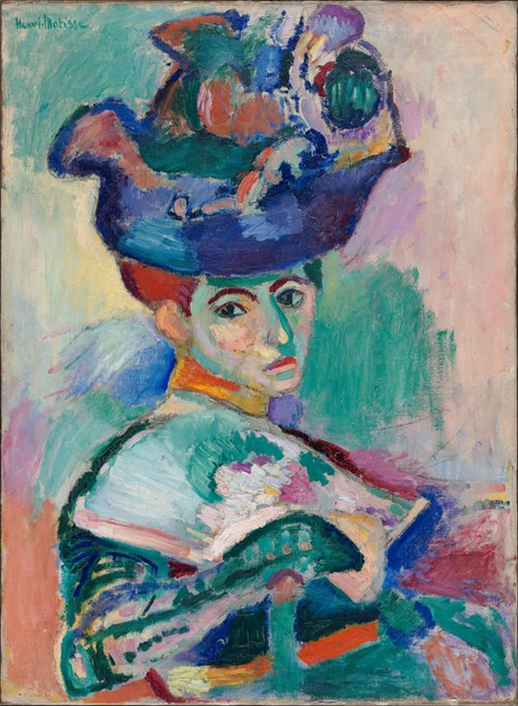

top genres
- surrealism
- abstract expressionism
favorite pieces
- Icarus, plate VIII from the illustrated book 'Jazz', Henri Matisse, 1947
- Woman with a Hat, Henri Matisse, 1905
- Blue Horses, Franz Marc, 1911
- Composition VII, Wassily Kandinsky, 1913
- The Ladies of Avignon, Pablo Picasso, 1907
- The Old Guitarist, Pablo Picasso, 1903
objective preferences
You are drawn towards abstract representations of nature, as well as non-representational abstraction. In general, you preferred nature over humans in an artistic context, and favor the landscape painting classification.

feeling
"serene" dominated your feeling categorization -- so perhaps this emotion is what draws you towards expressionism. Perhaps colorful, abstract portraits make you feel at peace. It is likely that you value a sense of serenity as an indicator of your enjoyment when viewing a piece of art. Despite this, surreal art with religious themes gave you a visceral feeling. Here are some colors your may like: